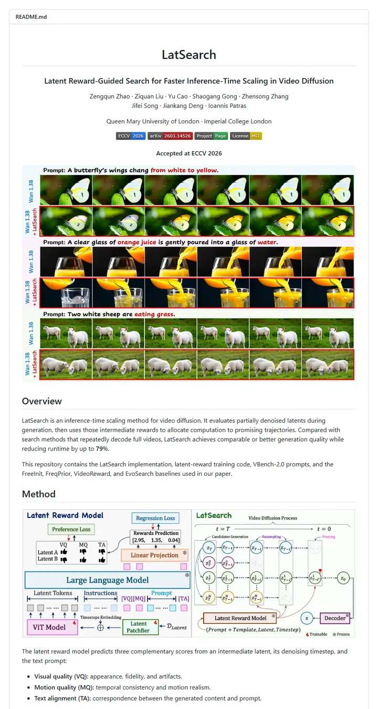

zengqunzhao/LatSearch
A quiet title card followed by a storyboard: each prompt gets a strip of frames from the base model and a red-framed strip from the method, so the difference is read before a word of method is.

Checked against the rendered page. The results table bolds the authors' own rows rather than the column best (EvoSearch 55.01 beats the bold 53.84); shields `yellow` renders #d8b800, not the METHOD_README value; the teaser row-label blue (about #4388c9) comes from a small pixel count.
Why it is here
The centered header is calm and the prompt-by-prompt teaser grid has red highlighted rows, while pairing the paper's results figure with a tidy Markdown summary table keeps the results readable.
Overview
Header Block
Badge Colors
Section Outline
Guidelines
More like this

adobe-research/obj-and-mat-selection
A conference proceedings page with its own table of contents: bold names on a centred line, a small ACM SIGGRAPH seal, six slim tags, and a grid of watermelon and kitchen shots washed in teal where the model chose.

Chuan-10/AGILE
A lab bench under bright light: a five-letter name, a strip of heavy uppercase tags, then a contact sheet of hands gripping scissors, mugs and controllers.

coral-lab-asu/CRAFT
A tool manual with a conference ribbon: one centred title, a long strip of emoji-tagged badges, a dotted link bar, then a three-row table that explains the whole method before the first install line.

damon-demon/SpanUQ
A command-line tool's manual with a conference stamp: a bracketed headline, four small colored tabs, a dotted jump bar, and numbers before the first paragraph ends.

deepmancer/HairPort
A paper laid out as a press kit: a row of loud capital-letter tags, a dated bulletin, and numbered figures that each carry a caption like a journal page, all separated by thick grey rules.

donaldssh/K-Merge
A conference title slide pinned to a white wall: one centred heading, a quiet credit block, a short strip of grey-and-color tags, then a pastel block diagram that tells the story before a word of prose.